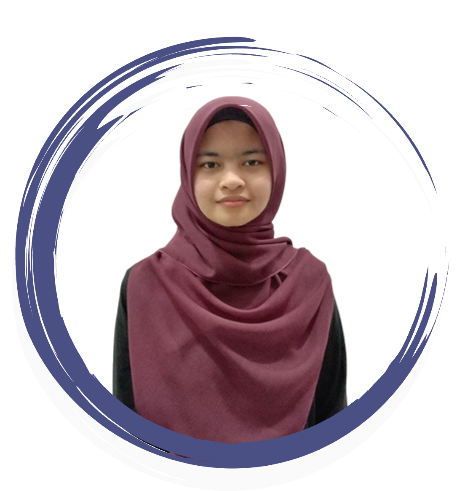

OUTREACH PROGRAM
IM PRIHATIN: LET'S EXPLORE THIS TOGETHER!
OUTREACH PROGRAM
IM PRIHATIN: LET'S EXPLORE THIS TOGETHER!
My Experience
IM PRIHATIN: LET'S EXPLORE THIS TOGETHER!
This is an outreach program that our class, D1IM1105E need to do an extension services program to complement our marks for the subject IMD314 which is Extension Services. So our class went to SK Laloh, Kuala Krai to be a facilitator to do this program.
It's my second experience as a facilitator. I am very happy to have the opportunity to be a facilitator again. Among the activities carried out is a workshop to normalize the digital world where each facilitator teaches and guides school students how to create digital certificates. In addition, there is an explorace activity where we facilitators have to take care of each checkpoint. It was a sweet experience for me because the students and teachers at SK Laloh are very friendly.
After the program at SK Laloh, we went to Istana Sangkut to spend time together. An experience I will never forget here because my friend and I slipped on the edge of the waterfall and got our clothes wet. We were cold because we didn't bring extra clothes. Below are pictures throughout the program:


About Me
Hi! I'm Sofiya, a student Diploma from UiTM Machang and currently in the last semester. This personal website is for my IMD311 assignment and I hope you enjoy this website! Thank you.
Before that, why not listen to instrumental music first?🤩